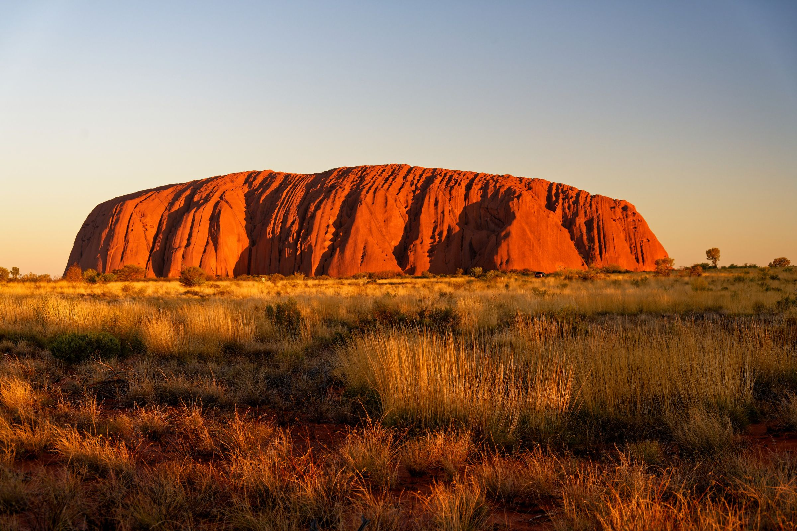
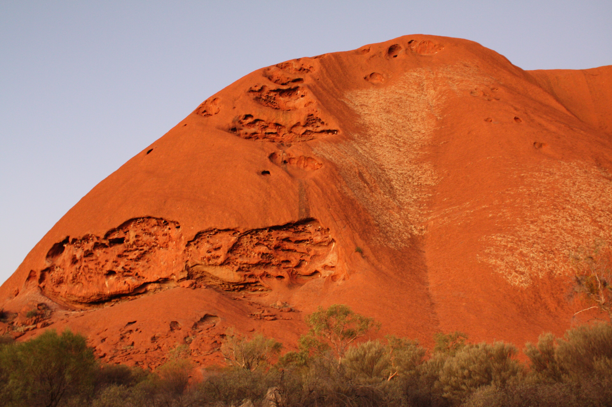
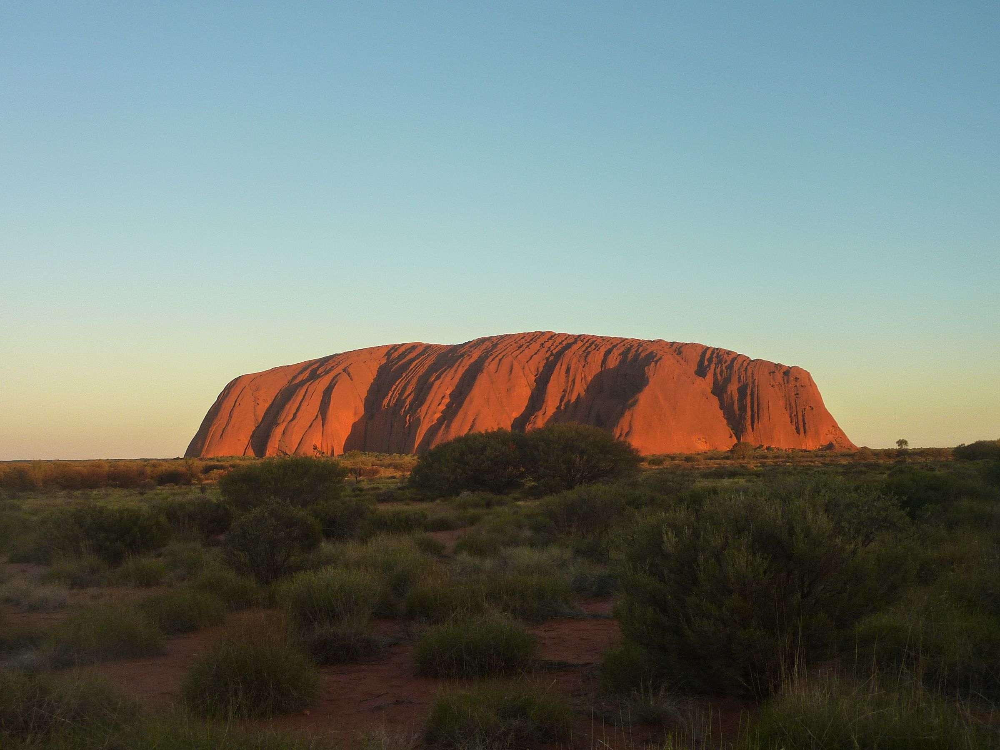
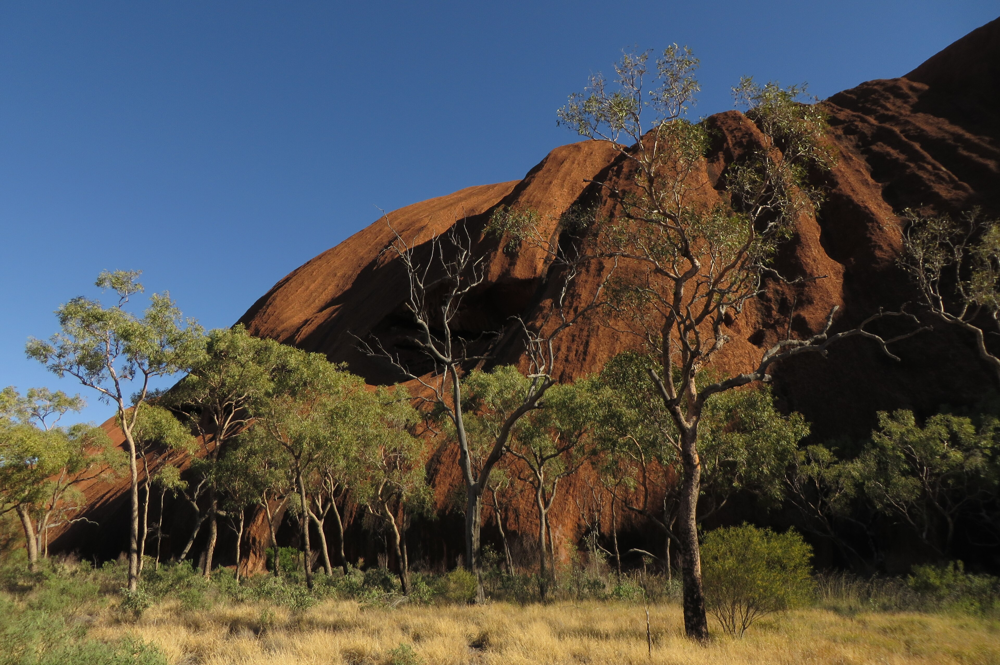
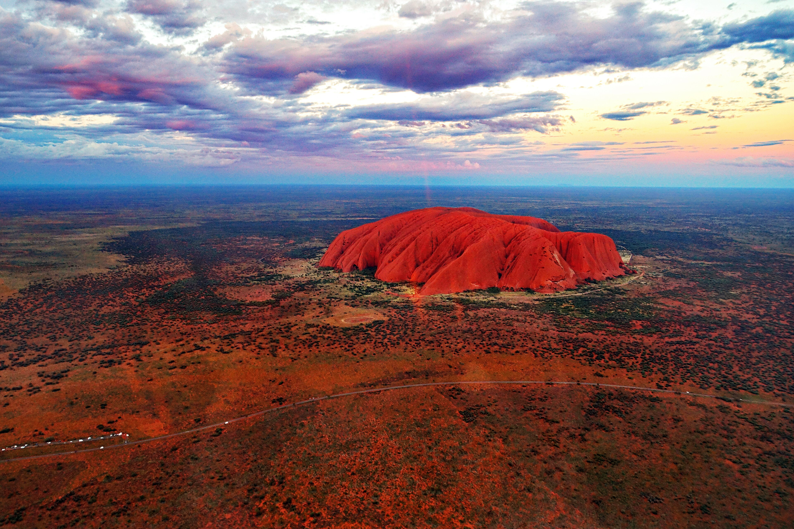
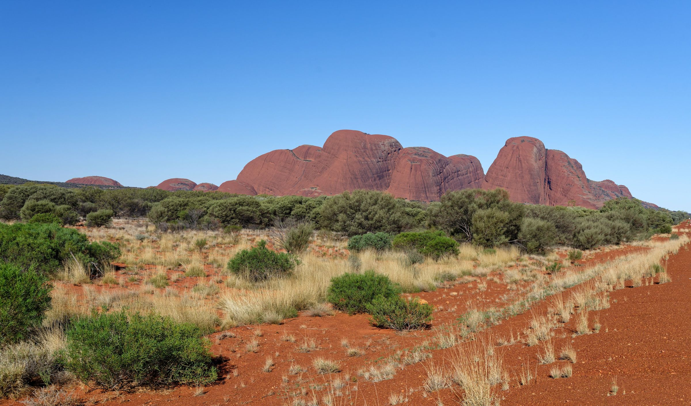

The skin
The red is a rind, not the rock. Iron-bearing minerals in the arkose weather to hematite; fresh stone beneath is grey-green. Every dawn and dusk repaints the surface.

Northern Territory · Australia
A single rock. 550 million years.
One living culture.
Uluru rises 348 metres out of the central Australian plain — taller than the Eiffel Tower, wider than it is high, and heavier than anything else standing on the continent. Most of it is still underground. All of it is Anangu Country.



The red is a rind, not the rock. Iron-bearing minerals in the arkose weather to hematite; fresh stone beneath is grey-green. Every dawn and dusk repaints the surface.
Beds of sandstone stand almost vertical, planed by wind and water into ribs and flutes. Those stripes are 550-million-year-old layers seen edge-on.
Caves, overhangs and waterholes ring the rock — shelter, canvas and law. Mutitjulu, on the south side, is among the most significant places in the park.
Granite ranges to the south erode. Feldspar-rich sand fans out across the plain — coarse, fresh, and destined for something else.
A shallow sea covers the sand. Pressure and minerals cement it into arkose: hard, gritty, and full of the iron that will one day rust red.
Crustal movement folds the beds and stands them almost vertical. Uluru's stripes are those layers, seen from the side.
Erosion strips the surrounding rock away. The hardest core is left standing — an inselberg, an island mountain in a sea of sand.
Anangu live with this country. Tjukurpa binds people, land and ancestral beings; the rock becomes a record, not a backdrop.

Anangu land · never cededUluru is not scenery with a story attached. For Anangu — the Pitjantjatjara and Yankunytjatjara people — it is a living record of Tjukurpa: creation, law, ecology and map in one.
Some places on the rock are men's business, some women's. Some are open to everyone, with a guide, on foot. Photographs are restricted where knowledge is restricted. Those rules are not obstacles to the visit; they are the reason it means anything.
Title deeds returned to Anangu on 26 October; the park is leased back for 99 years.
World Heritage listed for its natural values; cultural values follow in 1994.
The climb closes permanently on 26 October, the handback's anniversary.

Two nights minimum: one for the rock, one for Kata Tjuta. Walk early, carry more water than you think, and let Anangu guide the meaning.
9.4 km, flat but exposed. Three to four hours, best started at first light.
Arrive 45 minutes early and stay for the afterglow. The colour is the event.
Thirty-six conglomerate domes, 32 km west. The Valley of the Winds is the walk.
Anangu voices, art and Tjukurpa. Go before you walk, not after.